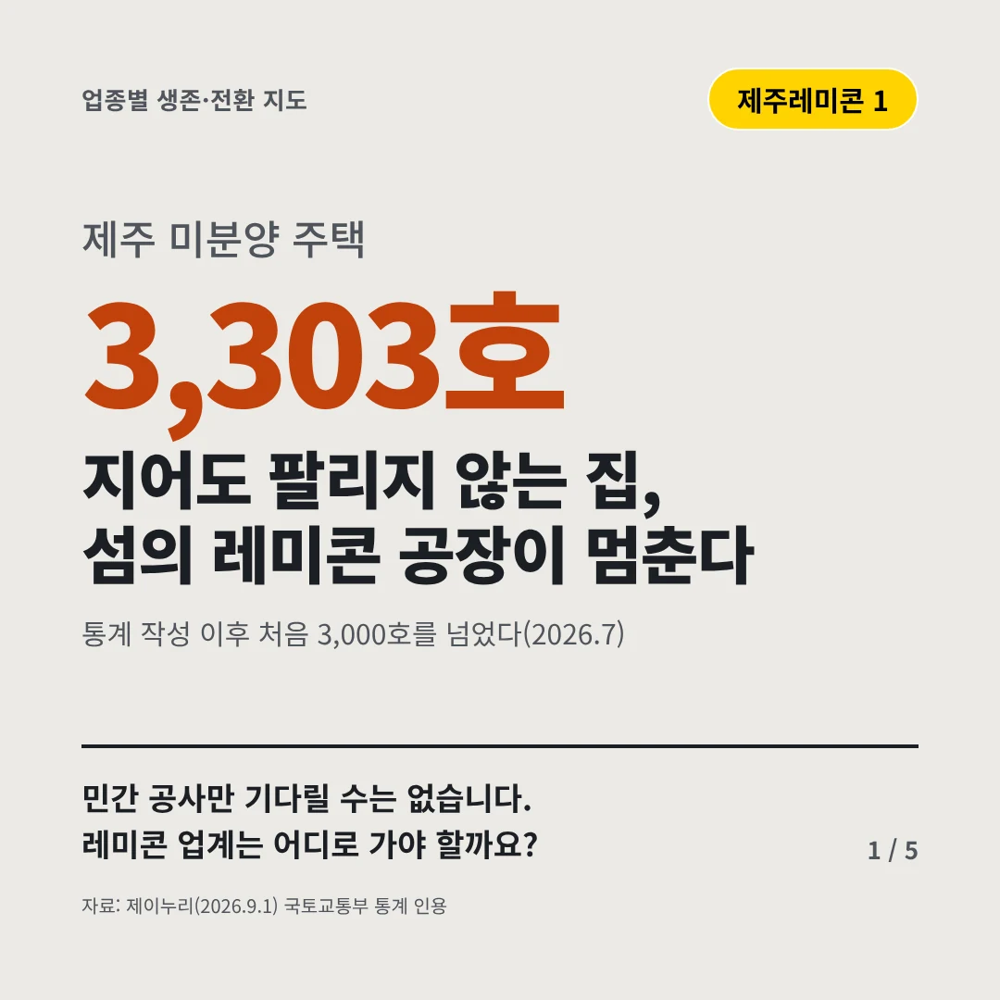
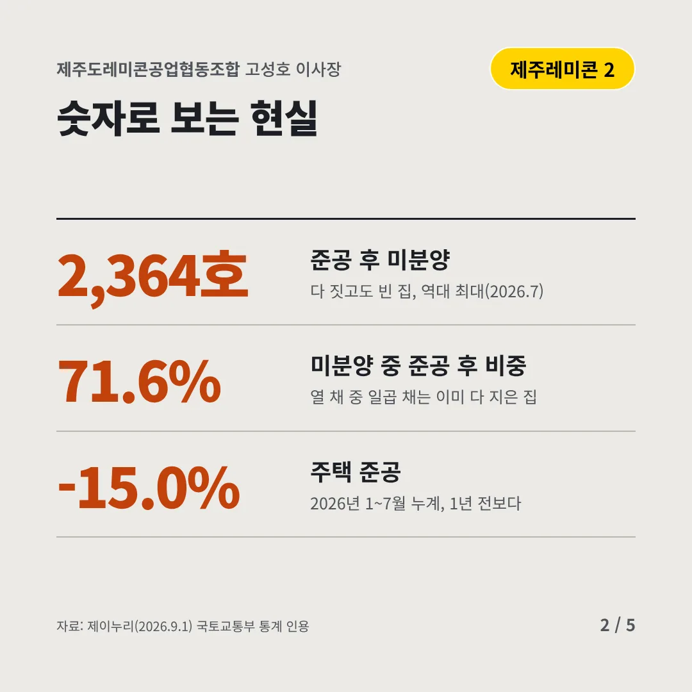
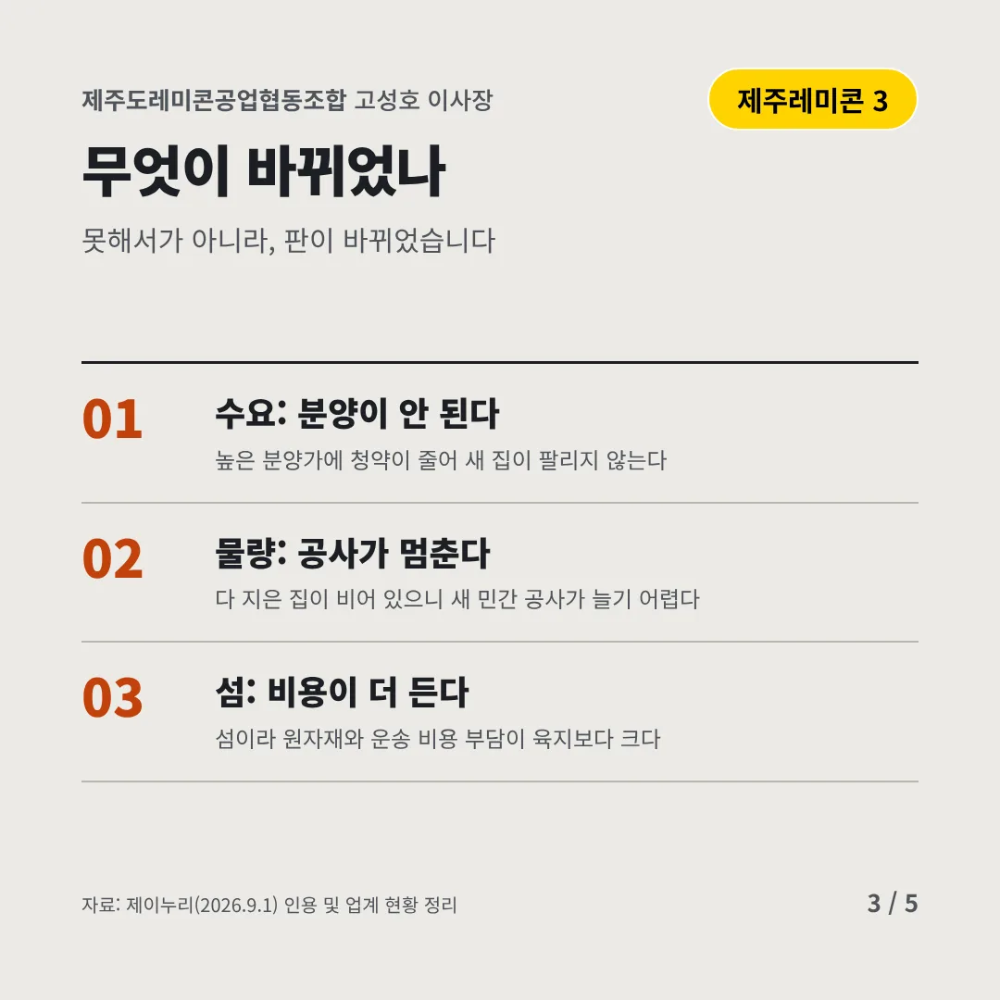
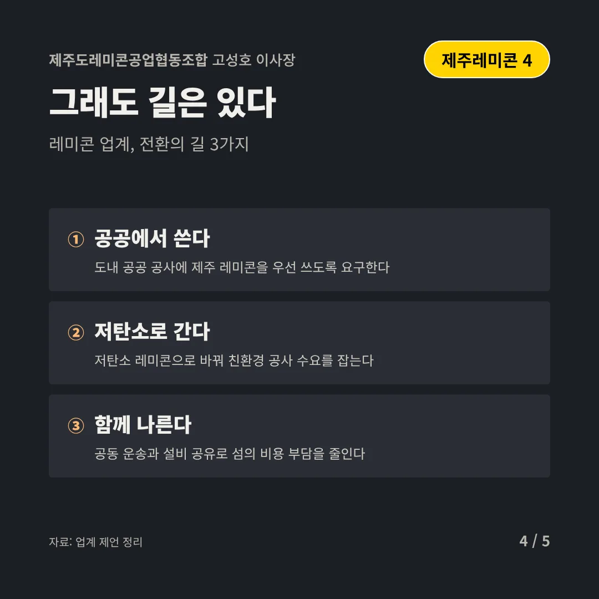
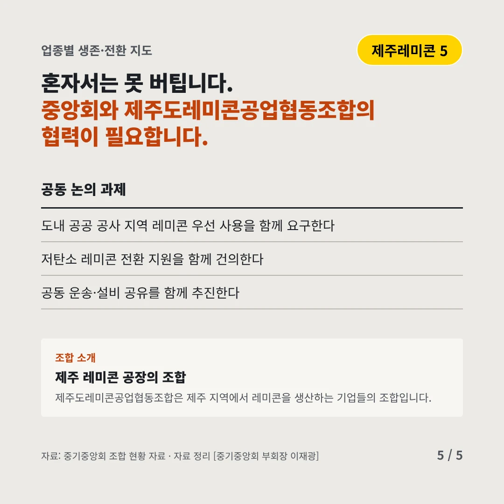
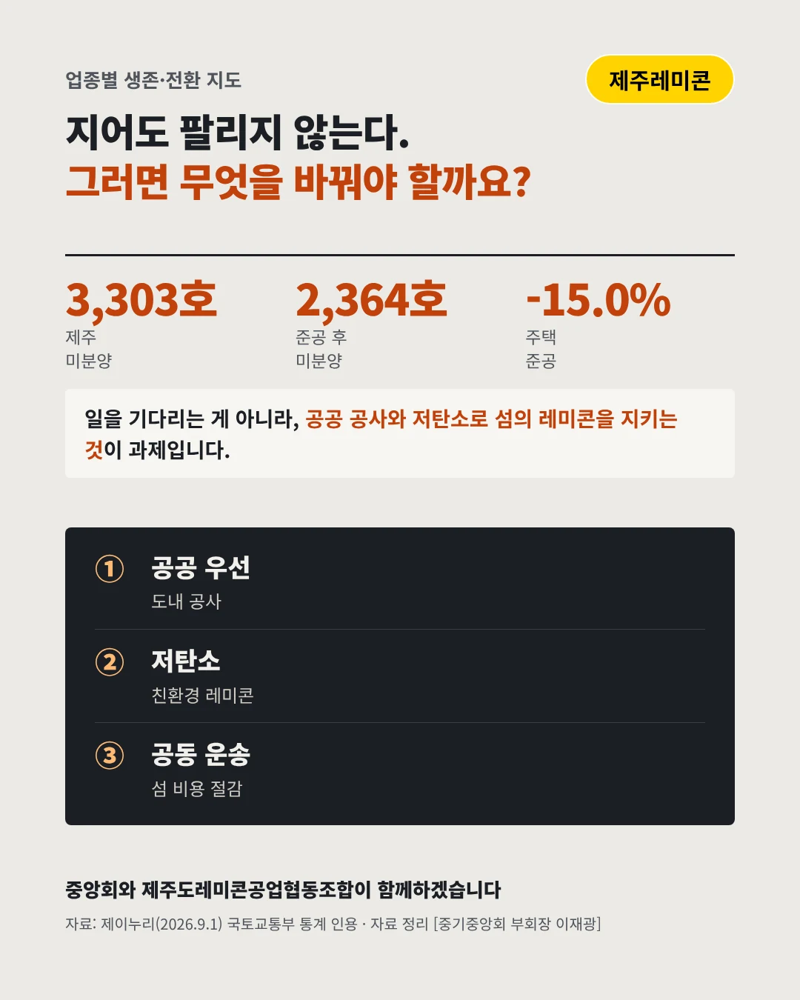

제주도레미콘공업협동조합
지어도 팔리지 않는 집, 섬의 레미콘 공장이 멈춘다
3,303호 제주 미분양 주택






민간 공사만 기다릴 수는 없습니다. 레미콘 업계는 어디로 가야 할까요?
숫자로 보는 현실
- 2,364호준공 후 미분양다 짓고도 빈 집, 역대 최대(2026.7)
- 71.6%미분양 중 준공 후 비중열 채 중 일곱 채는 이미 다 지은 집
- -15.0%주택 준공2026년 1~7월 누계, 1년 전보다
무엇이 바뀌었나
- 수요: 분양이 안 된다높은 분양가에 청약이 줄어 새 집이 팔리지 않는다
- 물량: 공사가 멈춘다다 지은 집이 비어 있으니 새 민간 공사가 늘기 어렵다
- 섬: 비용이 더 든다섬이라 원자재와 운송 비용 부담이 육지보다 크다
그래도 길은 있다
- 공공에서 쓴다도내 공공 공사에 제주 레미콘을 우선 쓰도록 요구한다
- 저탄소로 간다저탄소 레미콘으로 바꿔 친환경 공사 수요를 잡는다
- 함께 나른다공동 운송과 설비 공유로 섬의 비용 부담을 줄인다
한 장 요약

조합 소개
제주도레미콘공업협동조합은 제주 지역에서 레미콘을 생산하는 기업들의 조합입니다.
자료: 제이누리(2026.9.1)